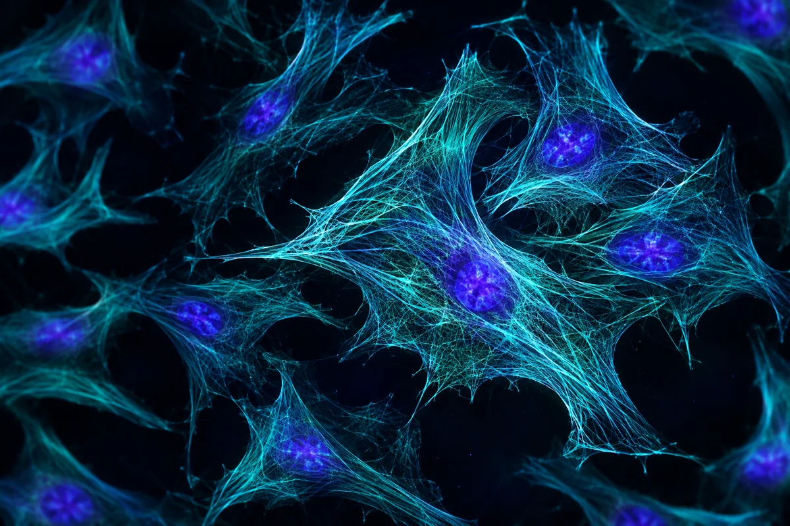

BiologyTools
BiologyTools
Image viewing & annotation
BioGTK
Explore whole-slide images and multidimensional stacks, annotate regions of interest, and run ImageJ macros on Windows, macOS, and Linux.
Capture, view, and annotate microscopy images. Build your own imaging workflows with .NET libraries for image processing and OME-Zarr.

Image viewing & annotation
Explore whole-slide images and multidimensional stacks, annotate regions of interest, and run ImageJ macros on Windows, macOS, and Linux.
Microscope control & acquisition
Control supported microscopes and acquire tiled images or Z-stacks. Use the built-in microscope simulation to work without hardware.
Image processing library
Read, process, and annotate microscopy images from .NET code. Build scripts and applications without requiring a graphical interface.
Multiscale image storage library
Read and write Zarr v2 and v3 in .NET, work with OME-Zarr image pyramids, and navigate scenes and coordinate transformations.
Start with setup guides or search the API references and version archives.